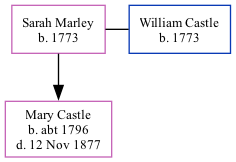

Sarah Castle (née Marley) 1773 -
[ Home ] | [ Calendar ] | [ Surnames Index ] | [ Family History ]Sarah Marley, the 4 times great-grandmother of Nigel Horne, was born in Mongeham, Kent, England in 17731,2,3 and married William Castle (with whom she had 1 child, Mary, ) at St Margaret's Church, Womenswold, Kent, England on Oct 15, 17934.
Throughout her life, she lived in Eastry, Kent, England in 18511; and in Tilmanstone, Kent, England in 18612.
Children
- Mary was born c. 1796
Citations
- 1851 England Census Online publication - Provo, UT, USA: The Generations Network, Inc., 2005.Original data - Census Returns of England and Wales, 1851. Kew, Surrey, England: The National Archives of the UK (TNA): Public Record Office (PRO), 1851. Data imaged from the National
- 1861 England Census Online publication - Provo, UT, USA: The Generations Network, Inc., 2005.Original data - Census Returns of England and Wales, 1861. Kew, Surrey, England: The National Archives of the UK (TNA): Public Record Office (PRO), 1861. Data imaged from the National
- Public Member Trees Online publication - Provo, UT, USA: The Generations Network, Inc., 2006.Original data - Family trees submitted by Ancestry members.Original data: Family trees submitted by Ancestry members.
- Pallot's Marriage Index for England: 1780 - 1837 Online publication - Provo, UT, USA: The Generations Network, Inc., 2001.Original data - The original paper slip index, from which this database was created, is owned by The Institute of Heraldic and Genealogical Studies, Canterbury, England.Original data:
Notes
familysearch.org person AFN: 1K9R-08X.
Family Tree
Generated by ged2site. Last updated on Nov 13, 2024